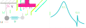

Pendula of Atomic Collisions

DWC Symposion 2021

We observe changes in the resonance profile

\[ {\color{blue}{\sigma(B, E)}} = \frac{2\pi\hbar}{mE}\sin^2\left( {\color{purple}{\delta_\text{bg}(E)}} + \tan^{-1}\left[\frac{{\color{orange}{\Gamma(E)}} / 2}{B - {\color{pink}{B_\text{res}(E)}}}\right] \right)\]

Phase Winding = Shape change

The resonance broadens

The resonance shifts

Two channels $\quad\Rightarrow\quad$ two pendula
\[\ddot{\vec{x}} + \begin{bmatrix}\gamma_1&0\\0&\gamma_2\end{bmatrix}\dot{\vec{x}} + \begin{bmatrix}\omega_1^2&\nu\\\nu&\omega_2^2\end{bmatrix} \vec{x} = \begin{bmatrix}Ae^{\text{i}\omega t}\\0\end{bmatrix}\]